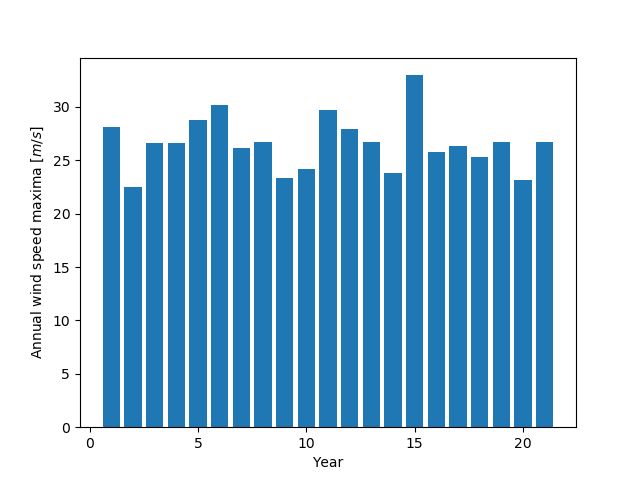

The Gumbell distribution, results¶
Generate the exercise results on the Gumbell distribution
import numpy as np
from scipy.interpolate import UnivariateSpline
import pylab as pl
def gumbell_dist(arr):
return -np.log(-np.log(arr))
years_nb = 21
wspeeds = np.load('sprog-windspeeds.npy')
max_speeds = np.array([arr.max() for arr in np.array_split(wspeeds, years_nb)])
sorted_max_speeds = np.sort(max_speeds)
cprob = (np.arange(years_nb, dtype=np.float32) + 1)/(years_nb + 1)
gprob = gumbell_dist(cprob)
speed_spline = UnivariateSpline(gprob, sorted_max_speeds, k=1)
nprob = gumbell_dist(np.linspace(1e-3, 1-1e-3, 1e2))
fitted_max_speeds = speed_spline(nprob)
fifty_prob = gumbell_dist(49./50.)
fifty_wind = speed_spline(fifty_prob)
pl.figure()
pl.bar(np.arange(years_nb) + 1, max_speeds)
pl.axis('tight')
pl.xlabel('Year')
pl.ylabel('Annual wind speed maxima [$m/s$]')
Total running time of the script: ( 0 minutes 0.064 seconds)